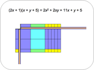
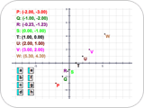
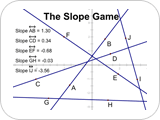
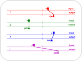
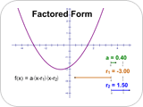
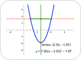
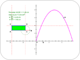

Algebra
NOTE: If you are using Internet Explorer and are unable to download the .zip activity files, right-click the download link and choose Save Target As to save to your computer.

Tiling in a Frame: Multiplying Polynomials
Students use Sketchpad algebra tiles to multiply polynomials. Using the polynomial factors as dimensions, they build rectangles out of tiles. The area of the completed rectangle represents the product.
Download Activity Files (.zip)

Points Lining Up in the Plane
Students are informally, experientially introduced to the relationship between descriptions of coordinate patterns and graphs in the Cartesian plane. Too often students don’t really understand the connection between an equation and its graph. This activity fosters the understanding that graphs depict the set of points whose coordinates satisfy an equation.
Download Activity Files (.zip)

The Slope Game
Students acquire an intuitive feel for slope as they construct and play a game in which one player rearranges lines on the screen and the other player tries to match each line with its slope measurement. The game can be modified to play alone as well.
Download Activity Files (.zip)
 Mellow Yellow: Interpreting Graphs
Mellow Yellow: Interpreting Graphs
Students interpret linear piecewise time-distance graphs that represent different stories about a character, Mellow Yellow. They decide whether a given graph corresponds to the motions (walking fast, walking slow, stopping, going backward) described in the story. Students then create stories based on given graphs and create graphs based on given stories.
Download Activity Files (.zip)
 Hikers: Solving Through Multiple Representations
Hikers: Solving Through Multiple Representations
Students use tables, graphs, and equations to represent and solve a real-world problem about two hikers walking at different speeds in opposite directions along the same trail.
Download Activity Files (.zip)
 Balancing with Balloons: Solving Equations with Negatives
Balancing with Balloons: Solving Equations with Negatives
Students use a Sketchpad pan balance model to solve a sequence of equations with positive numbers and variables, represented by weights, and negative numbers and variables, represented by balloons. As the problems increase in difficulty, students transfer the manipulation of the pan balance to solving equations independent of the balance.
Download Activity Files (.zip)

Introducing Dynagraphs
Students explore dynagraphs, an alternative to Cartesian graphs, to develop a feel for various types of functional relationships.
Download Activity Files (.zip)

Parabolas in Factored Form
Students plot a quadratic function in factored form, investigate the relationship between the equation and its graph, and use their observations to create functions from various descriptions of their graphs.
Download Activity Files (.zip)

Quadratic Quandary: Finding the Vertex of a Parabola
Students convert quadratic functions between standard, vertex, and factored forms. They check their results by changing parameters and comparing the graphs.
Download Activity Files (.zip)

A Rectangle with Maximum Area
Students explore areas of rectangles whose perimeter is fixed. They make a conjecture about what type of rectangle has the most area for a given perimeter and check their conjecture by plotting the side length and area of the rectangle on the coordinate plane.
Download Activity Files (.zip)
Back to Sample Activities